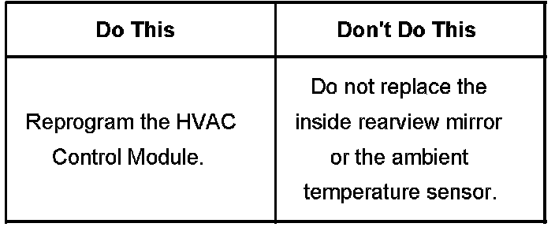
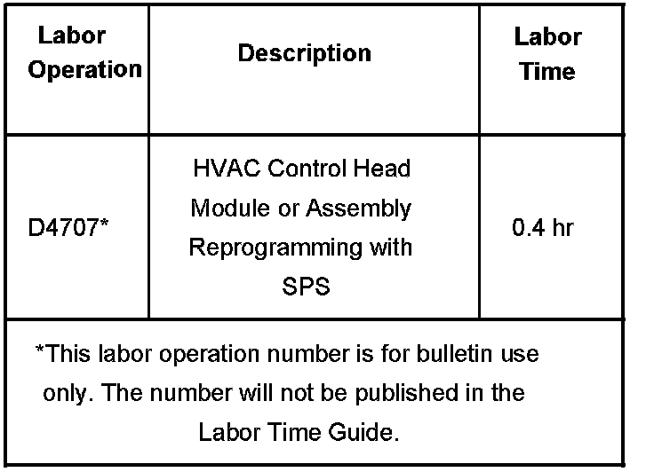

Instruments - Ambient Temperature Display Inaccurate
Bulletin No.: 07-01-39-003Date: April 18, 2007
TECHNICAL
Subject:
Inside Rearview Mirror Ambient Temperature Display Inaccurate Or Will Not Update Properly (Reprogram HVAC Control Module)
Models:
2007 Cadillac Escalade Models
with Automatic Dimming Rearview Mirror with Intellibeam(R), OnStar(R), Compass and Temperature Display (RPO DF5) and Intellibeam(R) High Beam Control (RPO TQ5)
Condition
Some customers may comment on an inaccurate ambient temperature display on the inside rearview mirror. Others may comment that the ambient temperature display does not update properly.
Correction

A revised calibration has been developed to address these conditions. Technicians are to reprogram the Heating, Ventilation and Air Conditioning (HVAC) Control Module, using the Service Programming System (SPS), with the latest software available on TIS2WEB. Refer to the HVAC Control Module Programming and Setup procedure in SI (Document ID# 1741202). As always, make sure your Tech 2(R) is updated with the latest software version.
Warranty Information

For vehicles repaired under warranty, use the table.

Disclaimer